Hootiefest 2023!
April 26-30, 2023

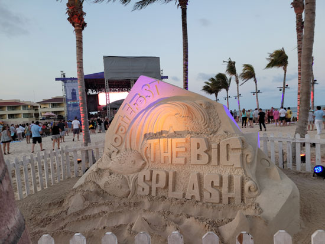
A sand sculpture of the Hootiefest logo - amazing!
The stage, all set up and ready for action.
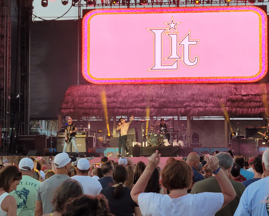
she got in around 10pm instead. And during the trip she also got a stomach bug, so that poor
girl spent a miserable evening in travel hell instead of seeing the Wednesday night show.
transportation folks about Desirae's flight delay, so I only heard the end of his show. I was
surprised that I enjoyed it as much as I did, he put on a good show - very high energy.

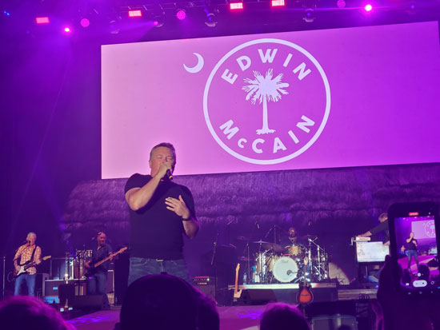
Up next was Edwin McCain. He's a long-time friend of the Hootie
guys, as a fellow South Carolinian.
He put on a great show, giving lots of funny commentary between songs.
He jokes that you are
almost guaranteed to hear his song, "I'll Be" on the easy
listening playlist of every grocery store
and Home Depot you visit.
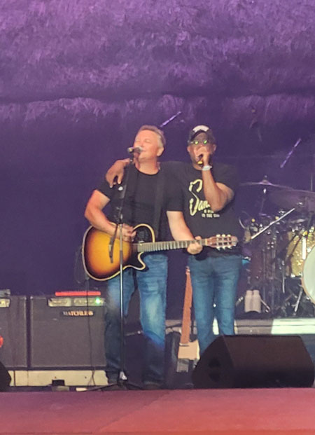
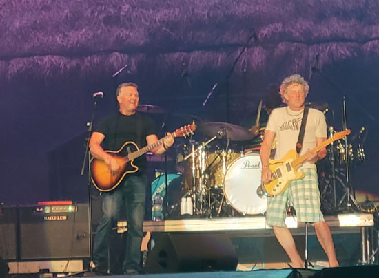
Mark Bryan making one of many guest appearances.
did a beautiful job on it.

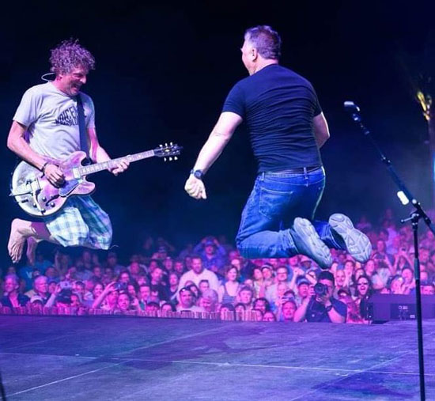
Mark Bryan & Edwin McCain - catching some air!
I am sharing some of those on this page as well.

The headliner for the evening was, of course, Hootie & the Blowfish. They were incredible, as always.

friend. We took a backstage tour from him once at a Darius Rucker concert in
Arkansas and he was just the nicest man. We always cheer for him now.
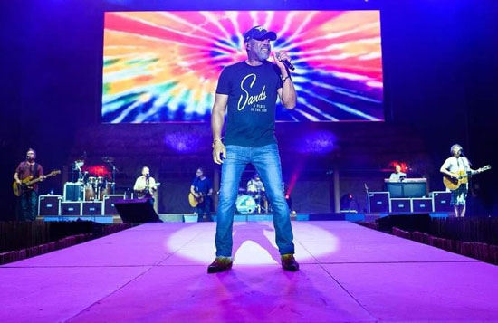
Professional shot of the first night's concert.
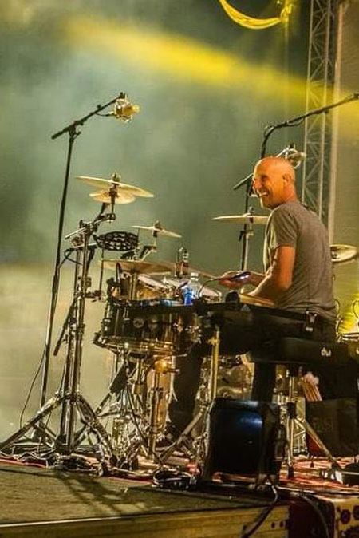
twice in the past year, he comes across as a very likable person.
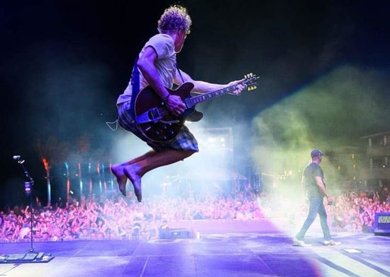
Mark Bryan is very energetic, and hates to wear shoes.
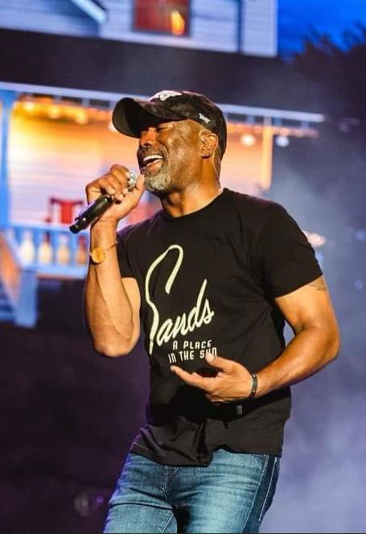

Thursday morning Desirae was still feeling sick, so I roamed around the resort on my own.
For years I did a spin class 4 days a week, so it was a hoot to see
this variation on spinning -
they put the bikes down in the water!
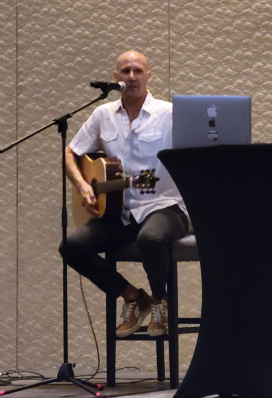
He also sang two songs that were very good.
He sang, "Change" a song he wrote on the 2019 HBF album, "Imperfect
Circle"
(which is fantastic, BTW, you should own it.)
He also sang Sesame Street lyrics for "Hold My Hand" that they used
when they
appeared on the show. It was a fun event.
And because I know you're wondering, here are some of the lyrics to the Sesame Street
version of "Hold My Hand":
When you're on the
corner, and you want to cross the street,
one thing to remember, before you move your feet.
You need a little help, from a
grown-up friend,
to cross the street the right way, take them by the hand.
'Cause I am here for you. I wanna cross with you.
Hold my hand...
And if that's not enough, here's a link to the video
of the performance, for which
Soni said they were very hung-over.
Here are some shots of the amazing sweets that are always available
-
truffles and pastries and cakes, oh my!
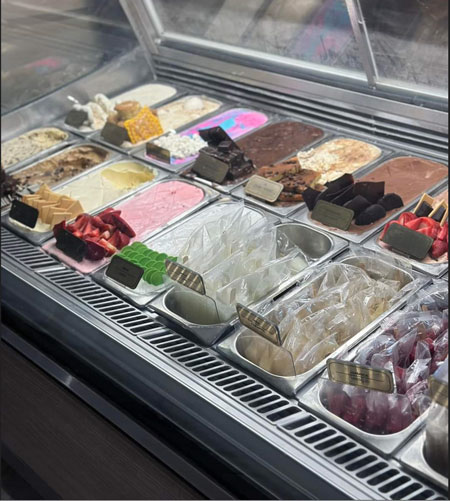


This is the pool area of the "Sunset" portion of the
resort. There are two other areas in the same
resort as well as a golf course.
The festival always gives out nice swag, this year it was a microfiber
towel which I love
too much to ever use, a great water bottle, and a year pin.
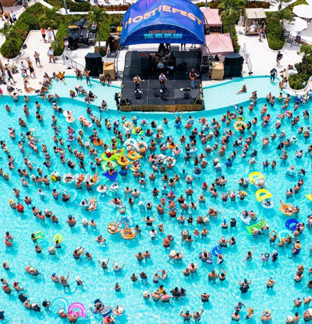

REM fans ready for action. I need to study up on that band. The
Hootie guys absolutely love REM,
but I've never really listened to their music. I was clueless during
this concert!
"Voice of Harold" which is a REM Tribute band that Mark Bryan put together.
I was off to the left in this picture, I think just outside of the frame.


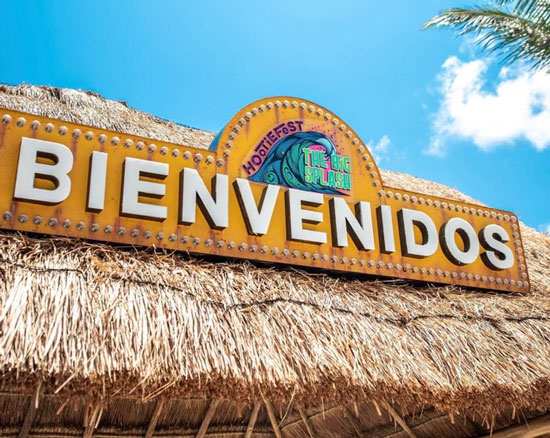

grab some grub while enjoying the music. And they have so many bathrooms that I've never, ever,
had to wait for a stall. That part is amazing to me in such a big venue.

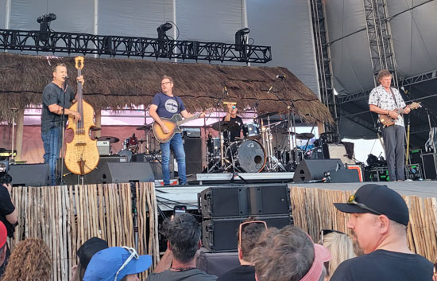
far left is Hank Futch. He is also in a South Carolina band called the Blue Dogs and is a great
musician. They get such a kick out of making fun of his name on stage, "Thank you very Futch!"
Here Dean Felber, the bass player for Hootie & the Blowfish is
guesting on a beautiful song that
Dean co-wrote with Hank Futch, "Waltz Into Me".
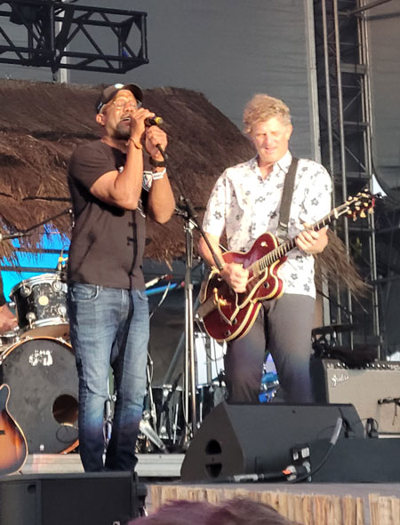
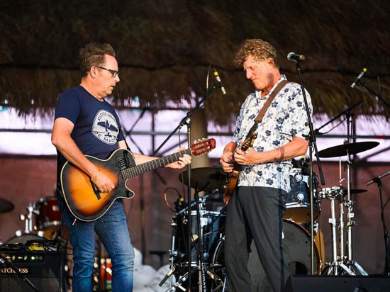
Professional shot of Dean & Mark. Dean has always been one of
my favorite guys in the band,
he's one of those super-quiet guys who you just know would be hilarious if
you could get him
to talk.
So fun! They told that Darius used to play that CD on endless repeat in their early touring days.
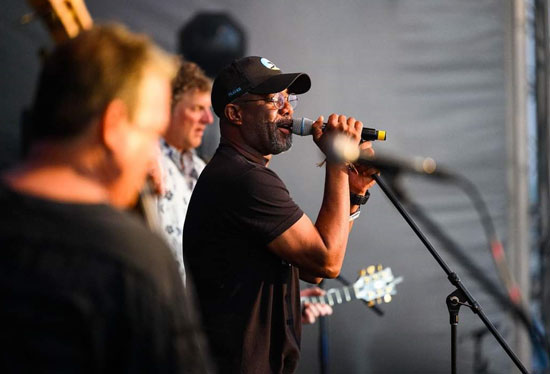
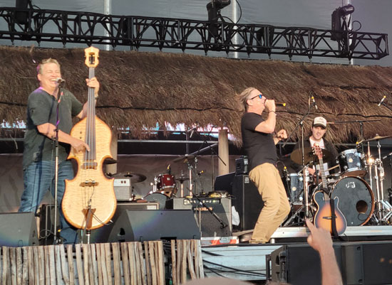
quite the show for his one song out from behind the drums. You can see how Hank is laughing hard.
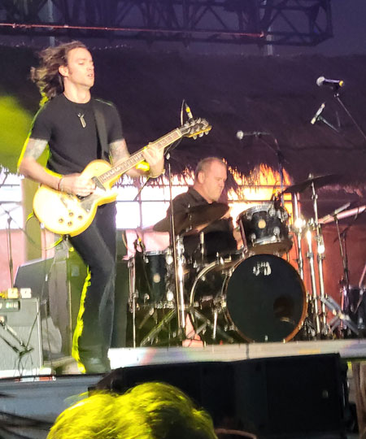

The "old man" Mark Bryan is catching a LOT more air!
a very special guest. This boy has been the stage hand for Cowboy Mouth for many years,
but was quitting after this event to do something else. Fred promised him a chance to perform
one song on the Hootiefest stage and he rocked the house!
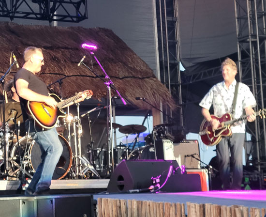
Edwin McCain making a guest appearance. It was a fun show.

Next was the Gin Blossoms, an awesome show. I'd forgotten they had so many really good songs.
This lead singer was Robin Wilson, the band's original lead singer died in 1992. Robin did a great job.
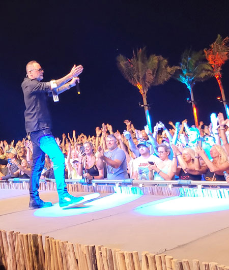

Fred LeBlanc from Cowboy Mouth, making a guest appearance. He's
been friends with the
Gin Blossoms almost as long as he's been friends with the Hootie
guys.
Turns out it hurts your neck to look up that high all night long, so I got behind
the cat walk after this.
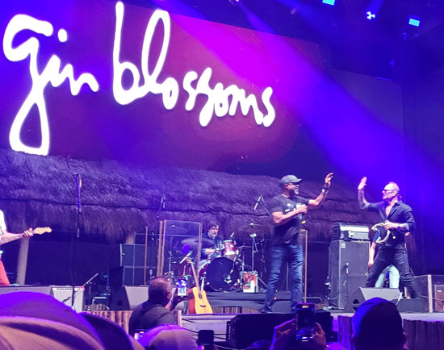
Darius making a guest appearance with the Gin Blossoms. He sang, "Hey Jealousy" with them.

concert. They have some really great songs.
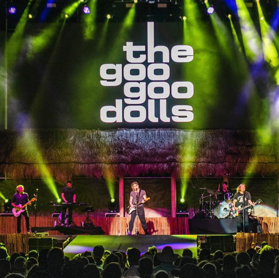

Fred posted some behind-the-scenes shots of him with his musical
friends. Here it's 3 of the Hootie
guys and Edwin McCain.
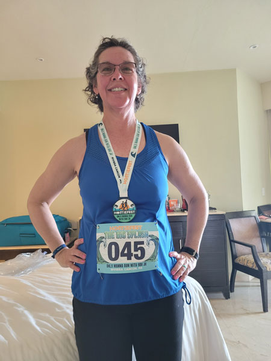

Our festival friends Alicia & Jim ran it too. I stole this picture from their Facebook post.
that was put on as part of the event. It was hot & humid but the medal was awesome!
After the race, Desirae was finally ready to leave the hotel
room! The poor thing missed
the first 2 days of a 4-day event, but she was finally ready to join the
land of the living.
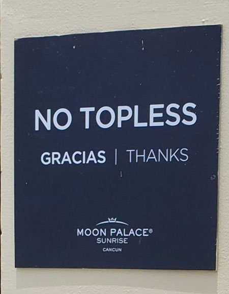
You know you're not in the USA if a sign like this is required.
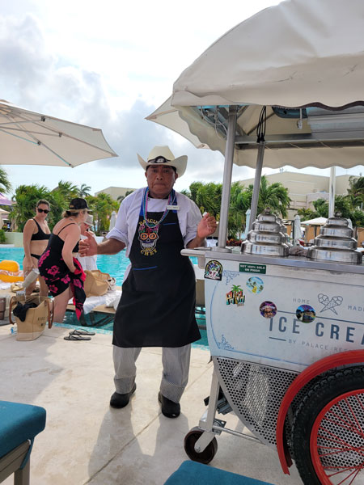
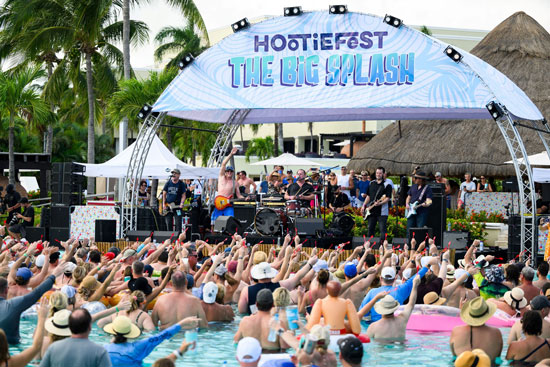
The Friday pool party is one of the highlights each year. Cowboy
Mouth is the perfect band for
an in-pool concert! Here we are with our red spoons at the
ready.
to get the girls to dance with him while he serves up amazing ice cream by the pool.
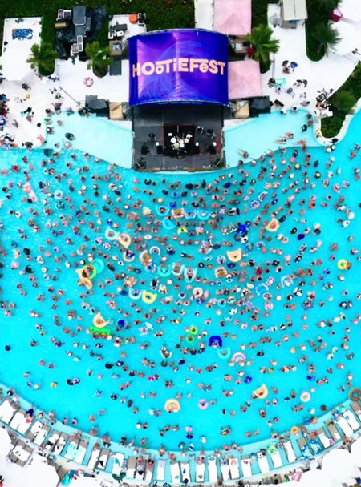
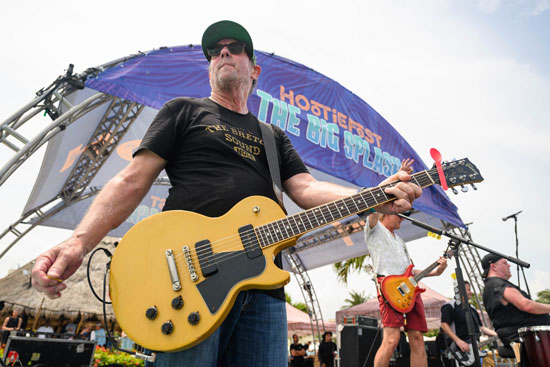
John Thomas Griffith - he and Fred are the only two original band members still hanging in there.

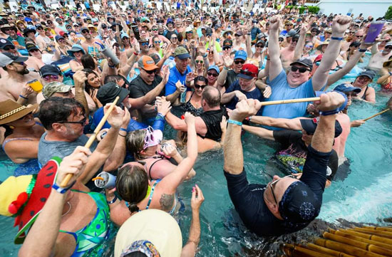
Here's
a video that tries to capture the energy of the event.
That night, HBF kicked off the night with a "Sunset Show",
which was one of the best shows
for me. This was their non-hit songs and favorite cover songs.
They allowed fans to submit
song requests - and mine got chosen! It was, "What Do You Want
From Me Now"
I loved every second of hearing that performed live. It was like
they were singing just to me!
Super fan Christine Cardus took
a video, which I will watch again and again. I was standing very
close to her too, so it's even the view I had of the
show.

They did so many great covers and seemed to be having the best time, that show was pure fun.

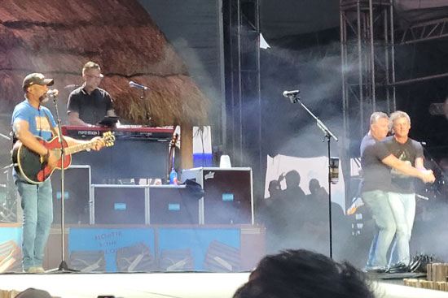
You Never Even Call Me By My Name - which was a blast!
I always thought the title of that song was, "The Perfect Country Western Song" but whatever
it's called, it was so fun to experience.

The guys from Barenaked Ladies came out to sing, "With a Little
Help From My Friends" which
is a song they always did together during their joint 2019 Group Therapy
tour.
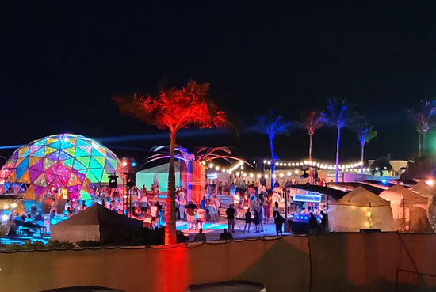
This is our view of the venue from our room, so we could still hear the music from there.
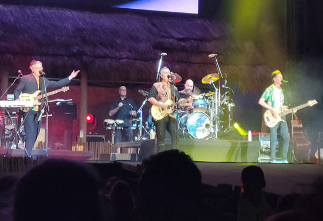
they are so talented and so hilarious at the same time.
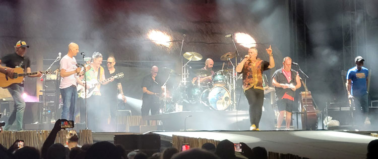
Here they had a "guest-a-palooza" with guests
including members of
The Gin Blossoms, the Hootie guys, and Fred LeBlanc. It was chaos, in a
good way.

Professional shots from the evening.
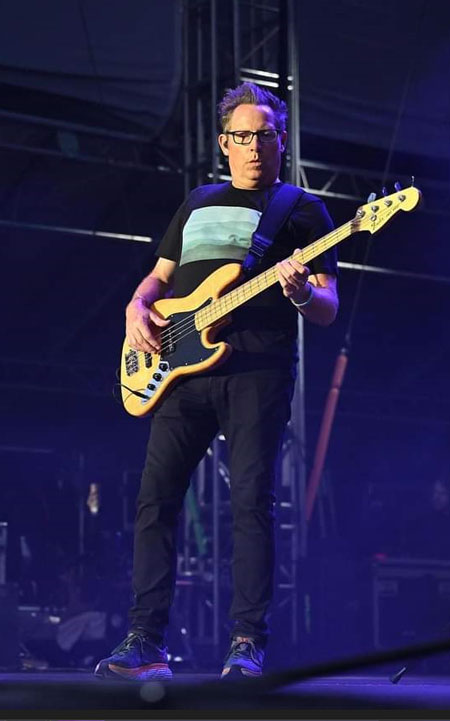
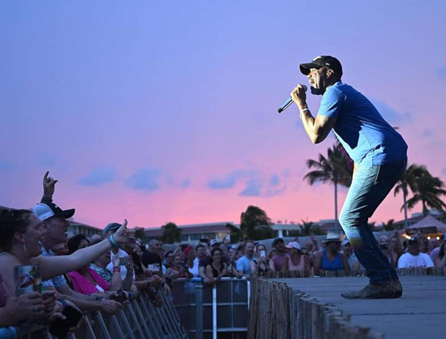
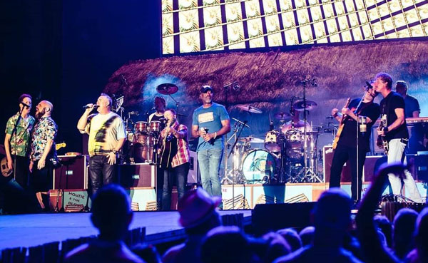

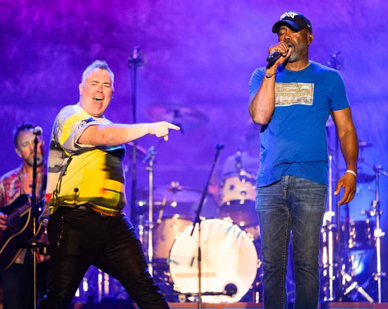


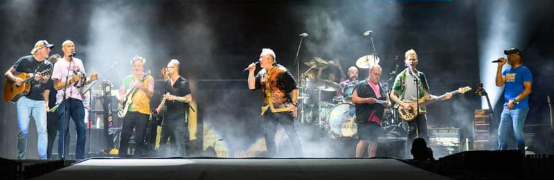
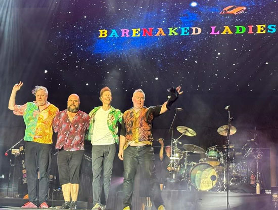
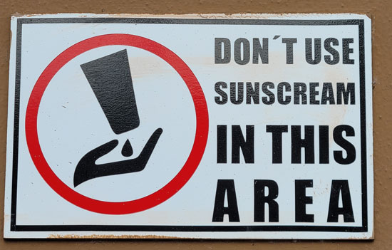
Fun with languages!

Unfortunately, the winds were too strong so they just dumped us out on Isla Mujeres. We
wandered around town and walked to a pretty beach. Wish we could have stayed at the resort instead!
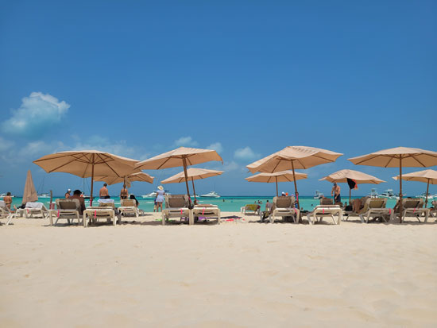
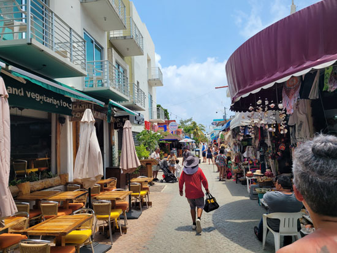

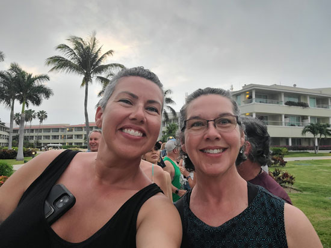
of about an hour. This was the only night we stood in line to get in, because everyone had
been waiting for the storm to pass.
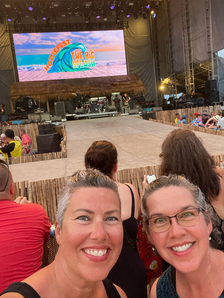

a super short set to make up for the storm delay. They were still in fine form.


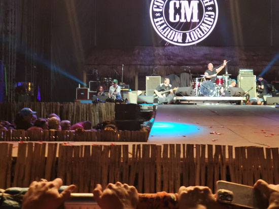
Red spoon detritus on stage, while Fred tells everyone to, "Get
down on the ground"
Let me tell you, that was a lot easier when I was in my 20's! Fred
should check on
the current age of his audience before expecting us to be able to jump up
on command.
There was a huge, collective groan as we all tried to pop up out of our crouch.


Next was Collective Soul - a band who has kept cranking out hits for
decades. I've always wanted to
see them live and they did not disappoint. Great show!

They came out on the cat walk a lot so we had some great views.

Jesse Triplett, the lead guitarist, thrashing one out.
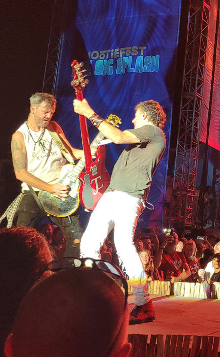
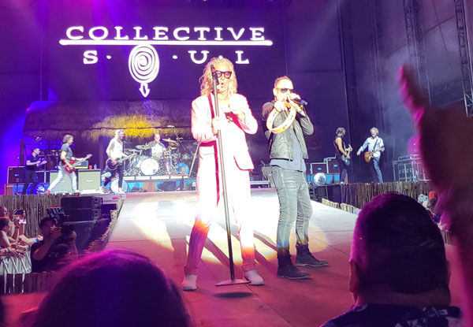

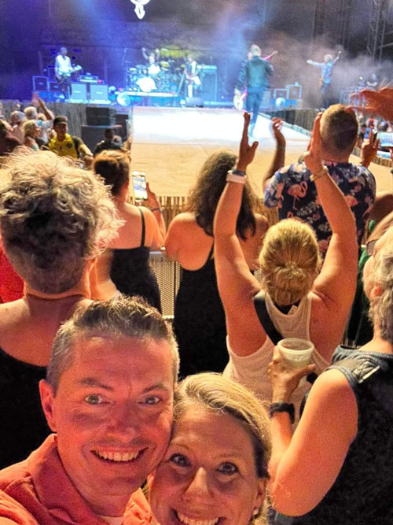


Taking a bow after a job well done.
Ed Roland.

A shot of the crowd taken from the stage. Ready for the grand finale - Hootie & the Blowfish!

but these guys are up to the challenge. Here our "friend" VIP Lee gets to come out from the
keyboard for a change and move around on stage. Lee is on the far right.
Later in the evening, Soni came out from the drums to play keyboard and
Lee gets to roam free
on stage once again.

This shot shows Desirae & I, both taking pictures since he doesn't
come out on the catwalk
very often.


My view of the night.

Soni getting out from behind the drums again, to play guitar this time.
They played, "Get Down On It" near the end and it was great fun!
Great shot of Dean thrashing the bass.
Hootiefest 2023 is in the books.
If you'd like to see videos of the festival, super fan Christine Cardus has a playlist on YouTube.

Fred LeBlanc backstage with Robin of Gin Blossoms and bandmate Matt Jones.

experiences. It helped make up for her missing out on the start of the event.